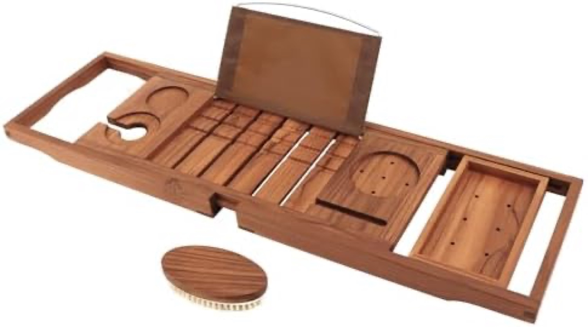
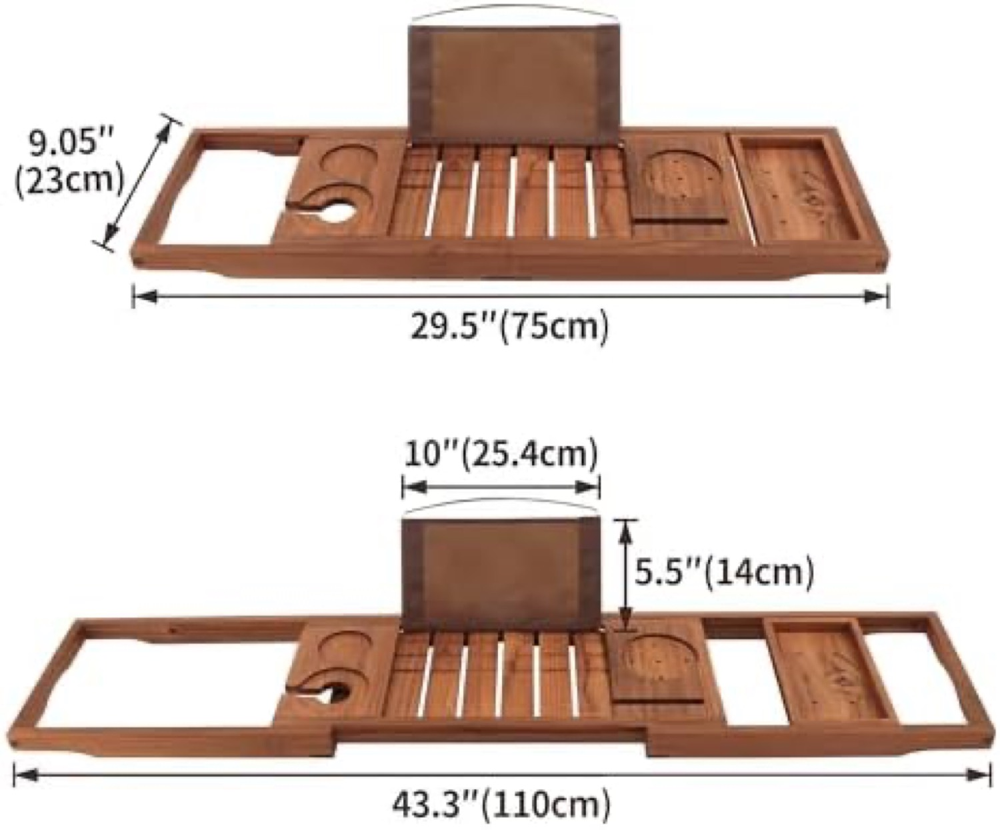
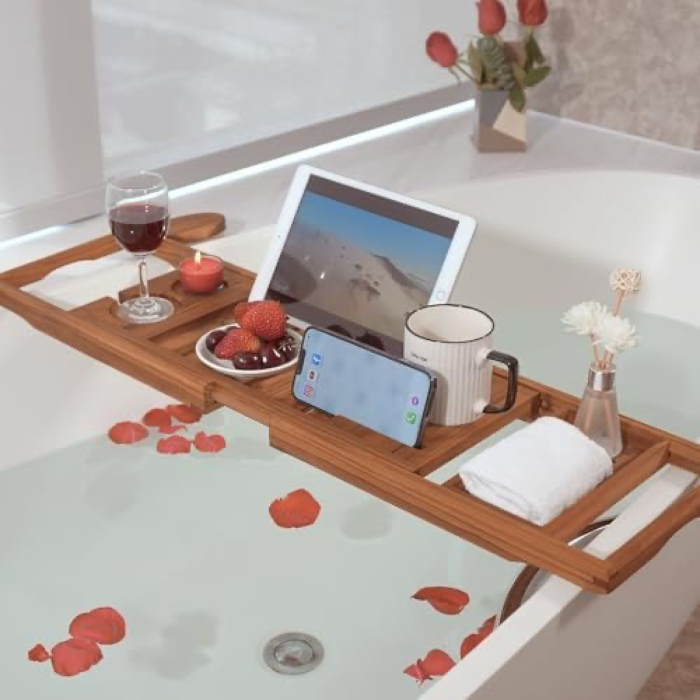
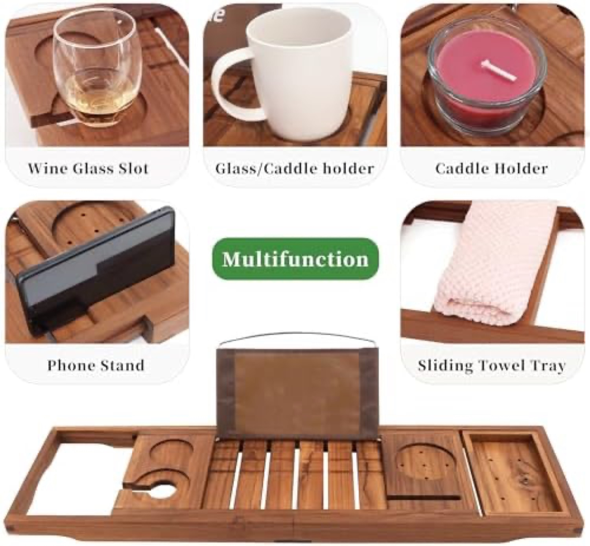
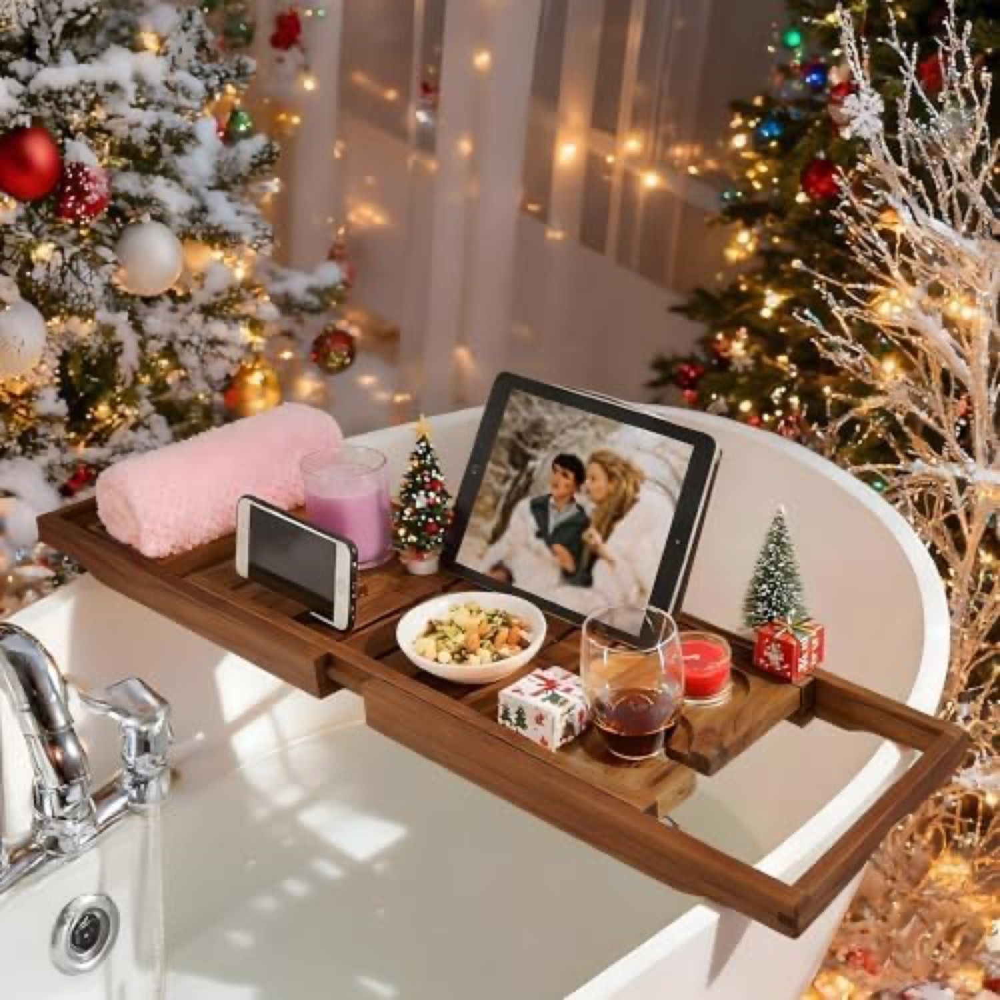
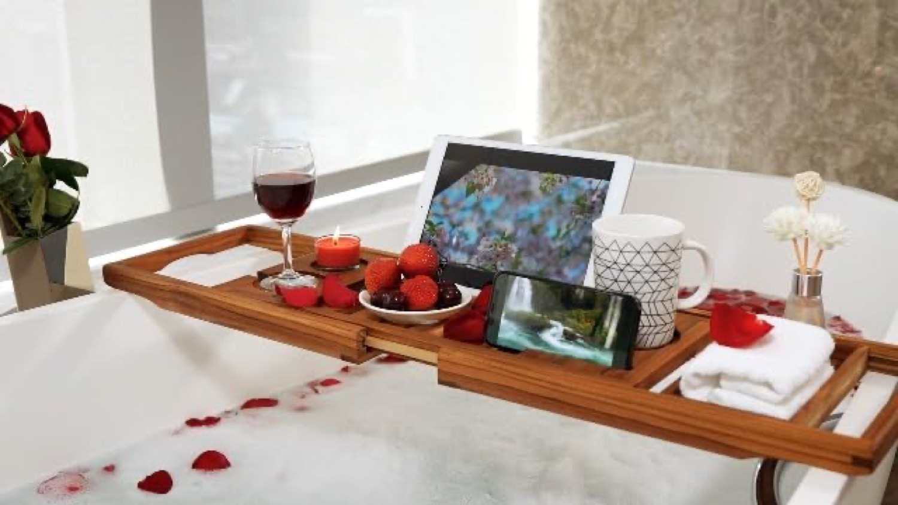

The premium teak leader: 4.5★ across 2,961 reviews, with a free teak body brush. Teak is naturally water-resistant, so it dodges the mold problem that drags bamboo down. But at ¥6,269 it barely sells.高級チークの首位：4.5★・2,961レビュー、チーク製ボディブラシ付き。チークは本来防水性が高く、竹を苦しめるカビ問題を回避。だが¥6,269では今ほとんど売れていない。






Verdict: High product, weak motion. Seven clean images, a Brand Store, a bonus teak brush, and a clean title. But no video, and the teak insight is never turned into a mold-proof claim.評価：製品は高品質、動きは弱い。クリーンな画像7、Brand Store、特典ブラシ、整った題名。だが動画なし、チークの強みを防カビ訴求にしていない。
Polished and trusted, but no video and no explicit water/mold claim, and the ¥6,269 price makes it nearly stop selling.洗練され信頼もあるが、動画も明確な防水/防カビ訴求もなく、¥6,269でほぼ停止。
Surfaces in search via Sponsored Products and runs a Brand Store. Premium positioning, leaning on the bonus teak brush as the hook.Sponsored Productsで検索に露出、Brand Store運用。特典ブラシを訴求軸にした高級ポジション。
It owns the material that beats mold (teak) but never advertises mold-resistance, the very thing buyers search for ("カビない").カビに強い素材（チーク）を持ちながら、買い手が検索する「カビない」を一切訴求していない。
The premium-teak tier barely sells at ¥6,269, the slowest of all ten tracked. The 2,961 reviews are a 2019-2020 legacy.高級チーク帯は¥6,269でほぼ売れず、追跡10商品で最遅。2,961レビューは2019-2020年の遺産。
Source: Keepa PRO, 2026-06-18.出典：Keepa PRO 2026-06-18。
Only ~12% in 1-3★ · far cleaner than bamboo (30%+). Teak's natural water-resistance is exactly why it avoids the mold tail.1〜3★は約12%のみ。竹（30%超）より遥かに良い。チークの天然防水性がカビの尾を回避。
With mold off the table, the few complaints are about value and finish (splinters, "good but expensive"). The lesson: solve water-resistance and the rating is no longer the problem, price and finish are.カビが消えると、数少ない不満は価格と仕上げ（とげ、「良いが高い」）。教訓：防水を解決すれば評価は問題でなくなり、価格と仕上げが論点に。